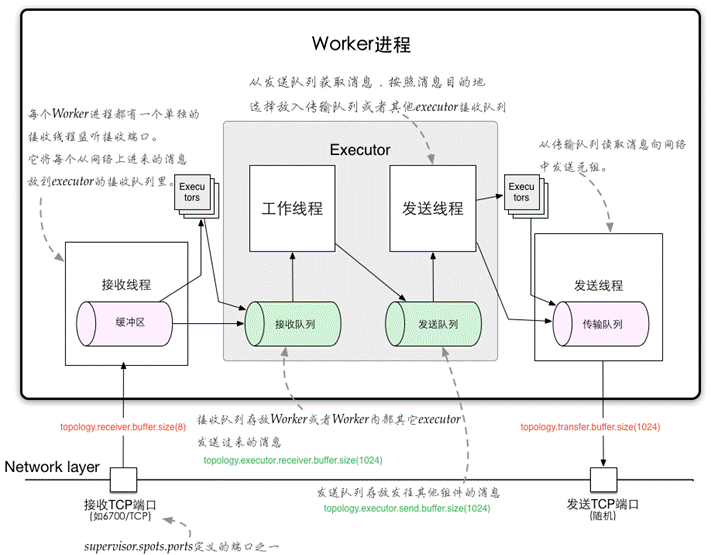
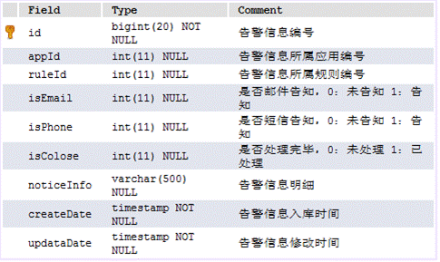
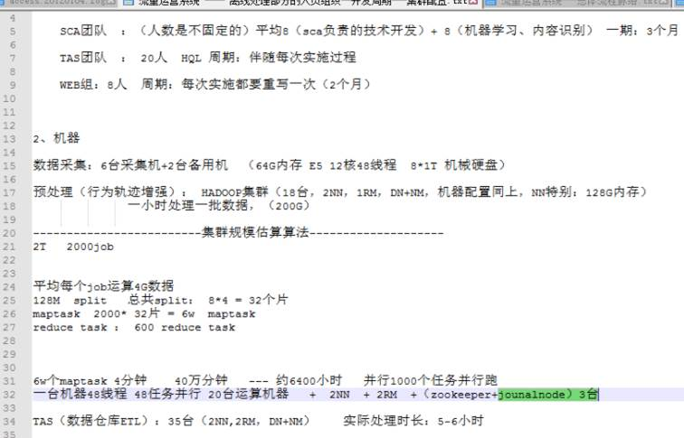

1.1 进行拉取数据的logstash的配置。这里把昨天那个配置也弄上来了
3. 案列API 模拟开g 玩家，并且写入到
redis 里面
Day14
另外一个项目 四天电商日志分析：（用户Session数据分析）
1. 开始导入项目：只需要完成spark模板，吧prom里面的scala前缀都删了
1.2 进行数据格式的转化，转化成：JavaPairRDD<String, Row> sessionId2ActionRDD 格式的数据：
1 . mapToPair(PairFunction 使用 JavaRDD<Row> ->
JavaPairRDD<String, Row>
2. .flatMapToPair(
PairFlatMapFunction使用
3
flatMap(new FlatMapFunction<Tuple2<String, Iterable<Row>>,
Long>() 的使用
3.1.1 上面filterByBlackList 方法的实现
3.2 （rdd.mapToPair(new PairFunction。。。）如何转换在transform里面声称自己的RDD
3.4 项目中 joinedRDD.filter(new
Function<...)
的使用，leftoutjoin之后 过滤黑名单
3.5 mapToPair(
PairFunction 返回需要的过滤好的RDD 类型，
3.6.1 generateDynamicBlackList 方法第一块
3.6.3 foreachRDD(
Function 使用 ，把数据持久化 导数据库中
6.2、 LogMonitorTopologyMain驱动类
6.5、PrepareRecordBolt发送邮件告警和短信告警
6.7、核心类 MonitorHandler 所有流程处理的核心代码
*********************日志监控系统报告系统结束
3.1 把数据导入到Mysql中,hive中创建一个user_action
得表
复习
|
input { file { codec => plain { charset => "GB2312" } path => "/root/logserver/basedir/*/*.txt" discover_interval => 30 start_position => "beginning" } } output { kafka { topic_id => "gamelog" codec => plain { format => "%{message}" charset => "GB2312" } bootstrap_servers => "hadoop01:9092,hadoop02:9092,hadoop03:9092" } } |
|
input { kafka { type => "accesslogs" codec => "plain" auto_offset_reset => "smallest" group_id => "elas1" topic_id => "accesslogs" zk_connect => "hadoop01:2181,hadoop02:2181,hadoop03:2181" } kafka { type => "gamelogs" auto_offset_reset => "smallest" codec => "plain" group_id => "elas2" topic_id => "gamelogs7" zk_connect => "hadoop01:2181,hadoop02:2181,hadoop03:2181" } } filter { if [type] == "accesslogs" { json { source => "message" remove_field => [ "message" ] target => "access" } } if [type] == "gamelogs" { mutate { split => { "message" => " " } add_field => { "event_type" => "%{message[3]}" "current_map" => "%{message[4]}" "current_X" => "%{message[5]}" "current_y" => "%{message[6]}" "user" => "%{message[7]}" "item" => "%{message[8]}" "item_id" => "%{message[9]}" "current_time" => "%{message[12]}" } remove_field => [ "message" ] } } } output { if [type] == "accesslogs" { elasticsearch { index => "accesslogs" codec => "json" hosts => ["hadoop01:9092,hadoop02:9092,hadoop03:9092"] } } if [type] == "gamelogs" { elasticsearch { index => "gamelogs" codec => plain { charset => "UTF-16BE" } hosts => ["hadoop01:9092,hadoop02:9092,hadoop03:9092"] } } } |
|
input { file { path => "/root/data/test.log" discover_interval => 5 start_position => "beginning" } } output { kafka { topic_id => "test1" codec => plain { format => "%{message}" charset => "UTF-8" } bootstrap_servers => "node01:9092,node02:9092,node03:9092" } } |
|
0.启动 zookeeper zkServer.sh start 1.启动kafka 后台启动kafka nohup /usr/local/kafka_2.11-0.9.0.1/bin/kafka-server-start.sh /usr/local/kafka_2.11-0.9.0.1/config/server.properties & 1.1 开启elasticserache (注意用户，要在bigdata下面启动且开启之前需要开启kafka) /home/bigdata/elasticsearch-2.3.1/bin/elasticsearch -d 2.创建一个 topic /usr/local/kafka_2.11-0.9.0.1/bin/kafka-topics.sh --create --zookeeper hadoop01:2181 --replication-factor 1 --partitions 1 --topic gamelogs2 3. 查询当前的topic /usr/local/kafka_2.11-0.9.0.1/bin/kafka-topics.sh --list --zookeeper hadoop01:2181 4.查看某个Topic的详情 /usr/local/kafka_2.11-0.9.0.1/bin/kafka-topics.sh --topic gamelogs2 --describe --zookeeper hadoop01:2181 5.5 生产信息 /usr/local/kafka_2.11-0.9.0.1/bin/kafka-console-producer.sh --broker-list hadoop01:9092 --topic gamelogs2 6.通过shell消费消息 /usr/local/kafka_2.11-0.9.0.1/bin/kafka-console-consumer.sh --zookeeper hadoop01:2181 --from-beginning --topic gamelogs2 5.5 6 这两部 5 查看消费位置 /usr/local/kafka_2.11-0.9.0.1/bin/kafka-run-class.sh kafka.tools.ConsumerOffsetChecker --zookeeper hadoop01:2181 --group gamelogs2 * 删除 /usr/local/kafka_2.11-0.9.0.1/bin/kafka-topics.sh --delete --zookeeper hadoop01:2181 --topic gamelogs2 需要server.properties中设置delete.topic.enable=true否则只是标记删除或者直接重启。 ?通过shell命令发送消息 /usr/local/kafka_2.11-0.9.0.1/bin/kafka-console-producer.sh --broker-list hadoop01:9092 --topic gamelogs2 *************************************** #启动logstash /usr/local/logstash-2.3.1/bin/logstash -f /usr/local/logstash-2.3.1/conf/logstash-kafka.conf 1 上面启动 /usr/local/logstash-2.3.1/bin/logstash -f /usr/local/logstash-2.3.1/conf/gs-kafka.conf 2 上面启动 /usr/local/logstash-2.3.1/bin/logstash -f /usr/local/logstash-2.3.1/conf/kafka-es.conf ************************************ * 启动elasticserach //修改权限： chown -R bigdata:bigdata /home/data/es/logs/bigdata.log ll /home/data/es/logs /home/bigdata/elasticsearch-2.3.1/bin/elasticsearch -d #访问head管理页面 http://hadoop01:9200/_plugin/head *********************** 打开redis 数据库 打开redis服务便于数据放到数据库当中，还得开启hdfs ，设置一个检查点 bin/redis-server redis.conf ps -ef |grep redis ******************杀死线程 ps -A -o stat,ppid,pid,cmd | grep -e '^[Zz]' | awk '{print $2}' | xargs kill -9 |
|
1 0 0 11 SLG1 82 36 牛魔将军 强效太阳水 38389249 0 0 2016-02-04 08:20:02 1 0 0 11 SLG1 82 36 牛魔将军 强效太阳水 38389249 0 0 2016-02-04 08:20:02 1 0 0 11 SLG1 82 36 牛魔将军 强效太阳水 38389249 0 0 2016-02-04 08:20:02 1 0 0 11 SLG1 82 36 牛魔将军 强效太阳水 38389249 0 0 2016-02-04 08:20:02 1 0 0 11 SLG1 82 36 牛魔将军 强效太阳水 38389249 0 0 2016-02-04 08:20:02 |
复习上一个游戏 找出开挂的人：
Scala+Logstash+ES+
Scala语言开发，数据获取用到logstash数据手机日志，消息缓存中间件 kafka，然后kakka用到了ES数据存储文件系统，SparkCore(离线)+SparkStreaming(实时的)，+Redis(存储热数据) +MySQL（存储冷数据）+Standalone(提交任务平台)
Java(语言开发) +Flume(获取数据)+Kafka(消息中间件)+(Flume把数据放到HDFS里面（放的是源数据）)+MapReduce(数据清洗)+HDFS(放入数据)+SparkSQL(离线数据分析)+SparkCore(离线)+SparkStreaming(实时)+MySQL()+Yarn(任务提交平台)
用户访问Session介绍：
用户在电商网站上，通常会有很多的点击行为，首先进入首页，然后可能点击首页上的一些品类，在进入某个商品，也可能随时在搜索框里面搜索关键字，还可能将一些商品加入购物车，对购物车中的多个商品下订单，最后对多个商品进行支付，用户的每一次操作，可以理解为一个action，比如点击、搜索、下单、支付。
用户session指的时，从用户第一次进入首页，session就开始了，然后在一定的时间范围内，直到最后操作完成，其中可能做了几十次，甚至上百次操作，只要离开网站，关闭浏览器，或者长时间没有操作，那么session就结束了 ，
以上用户在网站的访问过程，就称之为一次sesssion，在这，session实际上就是一个电商网站中最基本的数据，面向C端（customer）的分析
//LoggerLevels.setStreamingLogLevels(); |
获取到JavaRDD<Row> ActionRDD进行处理：
数据格式如下：
[2017-11-10,59,f8ba4bd658f94031b2865d4dcee100e5,1,2017-11-10 11:04:51,null,null,null,null,null,52,25,3]
//生成基础数据，需要一个actionRDD,接下来生成的RDD,封装了sessionId为key，action（动作）为value |
getSessionIdActionRDD(ActionRDD) 方法实现如下代码：
/** |
然后对数据进行 序列化到内存中，可以直接读取 - // JavaPairRDD<String, Row> sessionId2ActionRDD 就是上个方法的返回值
//最好对生成的比较重要的数据进行持久序列化，获取时可以直接从缓存读取
|
然后 下面是 对 aggregateBySession 的详细方法解析：
|
|
第一个方法： 需要弄懂
/**
* ***************************** 1 *************
* 获取session到对应的行为数据的RDD
*
* @param actionRDD
* @return
*/
private static JavaPairRDD<String, Row> getSessionId2ActionRDD(JavaRDD<Row> actionRDD) {
return actionRDD.mapPartitionsToPair(new PairFlatMapFunction<Iterator<Row>, String, Row>() {
@Override
public Iterable<Tuple2<String, Row>> call(Iterator<Row> it) throws Exception {
final ArrayList<Tuple2<String, Row>> list = new ArrayList<Tuple2<String, Row>>();
while (it.hasNext()) {
final Row row = it.next();
//2 在这里是session id 这个字段
list.add(new Tuple2<String, Row>(row.getString(2), row));
}
return list;
}
});
}
//我们接下来需要用到accumulator（累加器）进行对数据字段的累加过程 |
1.
上午写完代码运行
把 JavaRDD<Row> actionRDD :<访问行为> 类型的数据转换成 JavaPairRDD<String, Row> :<sessionId, 访问行为> 格式的数据
利用mapToPair 算出来数据格式
actionRDD.mapToPair(new PairFunction<Row, String, Row>() {
@Override
// ************************** 1.1 第一个方法 |
2. 计算出来<切片，1L >类型的数据
JavaPairRDD<String, Integer> 方法参数：（1）private static JavaPairRDD<String, Integer> generateAndMatchPageSplit(
JavaSparkContext sc,
JavaPairRDD<String, Iterable<Row>> sessionId2ActionsRDD,
JSONObject taskParam)
（2）根据参数从数据库中获取要计算的几个页面切片转化率的页面idfinal String targetPageFlow = ParamUtils.getParam(taskParam, Constants.PARAM_TARGET_PAGE_FLOW);
。。。（3）然后再这个方法里面 需要返回一个JavaPairRDD<String, Integer> 类型的值，如下代码
return sessionId2ActionsRDD.flatMapToPair(new PairFlatMapFunction<Tuple2<String, Iterable<Row>>, String, Integer>() { |
把 JavaRDD<Row> actionRDD :<访问行为> 类型的数据转换成 JavaPairRDD<String, Row> :<sessionId, 访问行为> 格式的数据 利用mapToPair 算出来数据格式 actionRDD.mapToPair(new PairFunction<Row, String, Row>() { |
1 . 下面这个是<sessionId, 迭代的用户行为>
JavaPairRDD<String, Iterable<Row>> sessionId2ActionsRDD = sessionId2ActionRDD.groupByKey();
2.
需要返回类型为：
JavaPairRDD<String, Integer> - 》 里面是 <1_2,1> 这类的数据 ：
这个数据在累中定义是这样定义的List<Tuple2<String, Integer>> list = new ArrayList<Tuple2<String, Integer>>();
进行的参数方法为：
private static JavaPairRDD<String, Integer> generateAndMatchPageSplit( |
return sessionId2ActionsRDD.flatMapToPair(new PairFlatMapFunction<Tuple2<String, Iterable<Row>>, String, Integer>() {
@Override
//tup 里面存的就是< SessionID,迭代action>
public Iterable<Tuple2<String, Integer>> call(Tuple2<String, Iterable<Row>> tup) throws Exception {
如何获取里面的数据呢：Iterator<Row> it = tup._2.iterator();
然后定义Rows进行接收List<Row> rows = new ArrayList<Row>();
然后循环遍历这里面的数据：for (Row row : rows) {
long pageId = row.getLong(3);
if (lastPageId == null) {
lastPageId = pageId;
continue;
}
。。。。。图如下： 在这里老师那时候讲的大概就是 吧 JavaPairRDD<String, Iterable<Row>> sessionId2ActionsRDD = sessionId2ActionRDD.groupByKey();
JavaPairRDD<String, Iterable<Row>> sessionId2ActionsRDD)然后带入函数
private static long getStartPagePv(
JSONObject taskParam,
JavaPairRDD<String, Iterable<Row>> sessionId2ActionsRDD) {
。。。。
然后到这里
JavaRDD<Long>startPageRDD =sessionId2ActionsRDD.flatMap(new FlatMapFunction<Tuple2<String, Iterable<Row>>, Long>() {
public Iterable<Long> call(Tuple2<String, Iterable<Row>> tup) throws Exception {
如何使用呢 List<Long> list =new ArrayList<Long>();
Iterator<Row> it =tup._2.iterator();
while(it.hasNext()){
Row row =it.next();
long pageId =row.getLong(3);
if(pageId ==startPageId){
list.add(pageId);
}
}
return list;
然后方法需要的是个数，起始页面的个数，return startPageRDD.count();
这样就完成了起始页面访问数量的统计
//<2_1,1> |
//模板代码 |
然后
数据处理：数据类型都没有变化，只不过是把黑名单的log日志消息去除了
String: 第一个就是kafka传过来的Head信息，第二个就是String 信息，log日志
JavaPairInputDStream<String,String> -> JavaPairDStream<String,String>
adRealTimeLogDStream
-> filteredAdRealTimeLogDStream
上述方法 参数以及 使用：
private static JavaPairDStream<String,String> filterByBlackList(
JavaPairInputDStream<String, String> adRealTimeLogDStream) {
//接收到原始的用户点击行为日志后
// 根据MySQL中的动态黑名单 ，进行实施的过滤
//使用transform 算子将DStream中的每个batch RDD 进行处理,转换为任意的其他RDD
JavaPairDStream<String,String> filteredADRealTimeLogDStream = adRealTimeLogDStream.transformToPair(new Function<JavaPairRDD<String, String>, JavaPairRDD<String, String>>() {
@Override
public JavaPairRDD<String, String> call(JavaPairRDD<String, String> rdd) throws Exception {
//如何获取此算子当中的数据呢，还有如何用自定义数据类型并且声称RDD类型的呢？
// 首先从MySql中查询所有黑名单用户，转化为RDD
final IAdBlacklistDAO adBlacklistDAO = DAOFactory.getAdBlacklistDAO();
final List<AdBlacklist> adBlackLists = adBlacklistDAO.findAll();//里面都是id,
// 封装黑名单用户，格式为：<userId,true>
List<Tuple2<Long,Boolean>> tuples =new ArrayList<Tuple2<Long, Boolean>>();
for(AdBlacklist adBlackList:adBlackLists){
tuples.add(new Tuple2<Long, Boolean>(adBlackList.getUserid(),true));
}
JavaSparkContext sc =new JavaSparkContext(rdd.context());
final JavaPairRDD<Long, Boolean> blackListRDD = sc.parallelizePairs(tuples);
//将原始数据RDD 映射成<userId,Tuples<String,String>> -> <userid,Tuples<这里是kafka的一个信息/**/，log>>,
JavaPairRDD<Long,Tuple2<String,String>> mappedRDD =rdd.mapToPair(new PairFunction<Tuple2<String, String>, Long, Tuple2<String, String>>() {
@Override
public Tuple2<Long, Tuple2<String, String>> call(Tuple2<String, String> tup) throws Exception {
//Tuple2<String, String> 因为这里的 tup._1 对应的是kafka传信息的一个 message 消息，并没有什么卵用，但是就是得有
String log =tup._2;//这个是模拟生成的日志
String [] logSplited =log.split(",");
long userId =Long.valueOf(logSplited[3]);
//Tuple2<String, String> 代表userid，log
return new Tuple2<Long, Tuple2<String, String>>(userId,tup);
}
});
// 原始日志数据为:timestamp province city userId adId Optional :这里导包的时候一定要注意了 |
JavaPairRDD<Long,Tuple2<Tuple2<String,String>,Optional<Boolean>>> filteredRDD= |
JavaPairRDD<String,String> resultRDD=filteredRDD.mapToPair( |
//***************************** 2 generateDynamicBlackList(filteredAdRealTimeLogDStream); |
方法的实现：参数内容是上个去除黑名单之后 的数据
JavaPairDStream<String,String> filteredAdRealTimeLogDStream = filterByBlackList(adRealTimeLogDStream);
generateDynamicBlackList
:
这个动态获取黑名单的步骤：
/**
* //***************************** 2 动态生成黑名单
* @param filteredAdRealTimeLogDStream
*
* return
* ** 1 **
* Tuple2<String, Long>(key,1L)-> <yyyyMMDD_userId_adId,1L>
* ↓
* dailyUserAdClickDStream.reduceByKey
* ↓
* JavaPairDStream<String,Long> dailyUserAdClickCountDStream -> <yyyyMMDD_userId_adId,聚合结果>
* dailyUserAdClickDStream.foreachRDD(new Function<JavaPairRDD<String, Long>, Void>() {
* - rdd.foreachPartition(new VoidFunction<Iterator<Tuple2<String, Long>>>() {
* - return null 插入数据库中数据
* ** 2 **
* // 到此为止，在MySQL里面，已经有了 累积的每天各用户对各广告的点击量
* // 接下来便利每个batch中的所有记录，对每条记录都要去查询一下这一天每个用户对这个广告的累计点击量是多少
*
* ***
* JavaPairDStream<String,Long> blackListDStream = dailyUserAdClickCountDStream.filter(new Function<Tuple2<String, Long>, Boolean>() {
*
* 获取： final int clickCount = adUserClickCountDAO.findClickCountByMultiKey(date, userId, adId);
* //判断，如果点击量大于等于100，就认为是黑名单 这里先存到数据库中，再从里面取出来，保证实时
*
* *** 3 ***
* ** 3.1 **
* blackListDStream:里面每个batch，就过滤出来的已经在某天某个广告点击量超过100的用户
// 遍历这个DStream中每个RDD,然后将黑名单用户加入到MySQL中
* JavaDStream<Long> blackListUserIdDStream = blackListDStream.map(new Function<Tuple2<String, Long>, Long>() {
@Override
public Long call(Tuple2<String, Long> tup) throws Exception {
* ** 3.2 **
*
* // 3.2 根据userId进行去重
JavaDStream<Long> distinctBlackUserIdDStream =blackListUserIdDStream.transform(new Function<JavaRDD<Long>, JavaRDD<Long>>() {
@Override
public JavaRDD<Long> call(JavaRDD<Long> v1) throws Exception {
** 3.3 ***
* // 3.3 把黑名单用户持久化
distinctBlackUserIdDStream.foreachRDD(new Function<JavaRDD<Long>, Void>() {
@Override
public Void call(JavaRDD<Long> rdd) throws Exception {
rdd.foreachPartition(new VoidFunction<Iterator<Long>>() {
*
*/
代码实现
filteredAdRealTimeLogDStream：这个是过滤了黑名单之后的数据
private static void generateDynamicBlackList( 方法体 ↓ |
//通过原始实时日志的处理，将日志的格式处理成：<yyyyMMDD_userId_adId,1L> |
//针对处理后的日志格式，执行聚合操作,这样就能得到每个batch中，每天每个用户对每个广告的点击量 |
//到这里，获取到什么数据了? |
// ** 2 **** |
JavaPairDStream<String,Long> blackListDStream = dailyUserAdClickCountDStream.filter(new Function<Tuple2<String, Long>, Boolean>() { |
// ** 3 ** |
// 3.3 把黑名单用户持久化 |
半秒生成一次数据，本来是0.1秒，太快了
然后还有管道，切记
优化方案，调优：
少用shuffle ，减少map 端输出，
Worker并发度：
首先按照集群规模和集群的配置来设定
一般情况下，会把worker军费每一个节点里面，一个SuperVisor设定一个Worker
Spout数量设定：
Spout总数量默认等于Kafka 对应的Topic的分区数
一般情况下，一个Worker设置一个Spout
Bolt1数量设定：
首先根据数据量和数据处理的时间来设定
一般情况下，Bolt1的数量是Spout数量的2倍
Bolt2数量设定：
也是根据俄数量和处理数据的时间设定
因为Bolt1传过来的中间结果数据已经减少了许多
15229374481
配置storm集群：
1，制定的节点集群下面的空格-都不能省略
节点worker，最好一个节点上只配置一个worker，但是制定多少个端口，说明可以在每个节点上启动多少个worker
启动：
在子节点上启动supervisor： 启动主节点是可以的只不过没法计算
关闭：
关闭的时候直接kill 就行了 ，杀掉之后会有一个心跳机制，刷新几下观察及诶单数量
Free slots 槽数：
|
开启master ，在hadoop01上面 /usr/local/apache-storm-0.9.6/bin/storm nimbus & /usr/local/apache-storm-0.9.6/bin/storm ui & 然后开启从节点 /usr/local/apache-storm-0.9.6/bin/storm supervisor & |
Prediction of Fish Movement Parameters based on Multiple Regression
ReduceByKey 、GroupByKey、countByKey 、map、flatMap
Spark项目：session 分析，
Hadoop：的一个项目(后面老师再讲一个)
数据挖掘，推荐系统的项目
Hdfs hive hbase ( MR,基本没必要，都是用hive 写sql语句 )
Kafka ,spark , elasticsearch , （logstash）, redis
Spark core spark sql
ETL（extract transform load，数据的采集、清洗、导入）
这里要改成HiveContext 才能在sparksql中使用，空格注意。
注意jdbc.url.prod 需要改成myslq的，之前是跟上面jdbc.url 是一样的，还有spark。Local 需要换成false
打包：
这个core-site.xml 需要配置。应为里面有spark context 对象， hive on spark 读取mysql里面的数据
吧jar 宝弄上来
最终需要提交 yarn 模式， 但是老师这里用standonline 模式，这个模式可以的话yarn就没事，
然后运行程序里面的生成数据的类
然后 打开kafka 接收数据，然后开始提交任务
然后数据表里面就有数据了
本地跑动。
1. 改下本地模式为true
2. 然后删除掉刚才的暂存数据
就可以跑了，老师这里报错，内存溢出
然后就没有然后了，然后修改一下idea 运行时的对内存内存大小，一个G，可以试试
一个supervisor 里面一般都是一个worker 但是一个worker里面可以弄多个job，
Spout/bolt mappe/reduce
Execute(){
1、异常
2、任务超时--强制认为失败
}
因为数据发送时导致的数据重复发送问题，如何解决？
方法一：
1、比如对订单信息做处理，处理成功后把订单信息ID存到Redis(set<orderId,orderData>)
2、信息发送时，判断是否处理过此信息
Execute(){
//请求redis数据库是否包含
If()
Else{}//不包含，重新发送
}
方法二：
不做处理，点击流日志分析pv,uv,指标分析：订单人数、订单金额
对于每个Spout Tuple保存一个ack-val的校验值，它的初始值为0，然后每发射一个tuple或者ack一个tuple，tuple的id都要跟这个校验值异或一下，并且把得到的值更新为ack-val的新值。
<ROOTID,ACKVALUE>
l 在storm中，可靠的信息处理机制是从spout开始的。
l 一个提供了可靠的处理机制的spout需要记录他发射出去的tuple，当下游bolt处理tuple或者子tuple失败时spout能够重新发射（自己做）。
l Storm通过调用Spout的nextTuple()发送一个tuple。为实现可靠的消息处理，首先要给每个发出的tuple带上唯一的ID，并且将ID作为参数传递给SpoutOutputCollector的emit()方法：collector.emit(new Values("value1"), msgId); msgId=uuid
给每个tuple指定ID告诉Storm系统，无论处理成功还是失败，spout都要接收tuple树上所有节点返回的通知。如果处理成功，spout的ack()方法将会对编号是msgId的消息应答确认；如果处理失败或者超时，会调用fail()方法。
Storm 系统中有一组叫做"acker"的特殊的任务，它们负责跟踪DAG（有向无环图）中的每个消息。
acker任务保存了spout id到一对值的映射。第一个值就是spout的任务id，通过这个id，acker就知道消息处理完成时该通知哪个spout任务。第二个值是一个64bit的数字，我们称之为"ack val"， 它是树中所有消息的随机id的异或计算结果。
<TaskId,<RootId,ackValue>>
ack val表示了整棵树的的状态，无论这棵树多大，只需要这个固定大小的数字就可以跟踪整棵树。当消息被创建和被应答的时候都会有相同的消息id发送过来做异或。 每当acker发现一棵树的ack val值为0的时候，它就知道这棵树已经被完全处理了
有三种方法可以去掉消息的可靠性：
1、将参数Config.TOPOLOGY_ACKERS设置为0，通过此方法，当Spout发送一个消息的时候，它的ack方法将立刻被调用；
2、Spout发送一个消息时，不指定此消息的messageID。当需要关闭特定消息可靠性的时候，可以使用此方法；
3、如果你不在意某个消息派生出来的子孙消息的可靠性，则此消息派生出来的子消息在发送时不要做锚定，即在emit方法中不指定输入消息。因为这些子孙消息没有被锚定在任何tuple tree中，因此他们的失败不会引起任何spout重新发送消息。
见代码
异常真正失败：storm--spout.fail-->重发
超时假失败：storm--spout.fail方法-->重发
一种情况：对重复做处理
1、订单信息，处理成功（redis-->Set<orderid>）
2、消息重复发送，在对操作之前，判断是否处理过此消息
//判断redis set中是否包含此成员
Execute(){
If()else()
}
第二种情况：
不做处理，点击流日志分析pv，uv 指标分析：订单人数，订单金额）
数据分析的场景，本身对数据精度要求的不那么严格
Worker间的通信经常需要通过网络跨节点进行，Storm使用ZeroMQ或Netty(0.9以后默认使用)作为进程间通信的消息框架。
Worker进程内部通信：worker的thread通信使用LMAX Disruptor来完成。
不同topologey之间的通信，Storm不负责，需要自己想办法实现，例如使用kafka等；
worker进程间消息传递机制，消息的接收和处理的大概流程见下图

ü 对于worker进程来说，为了管理流入和传出的消息，每个worker进程有一个独立的接收线程(对配置的TCP端口supervisor.slots.ports进行监听);
对应Worker接收线程，每个worker存在一个独立的发送线程，它负责从worker的transfer-queue中读取消息，并通过网络发送给其他worker
ü 每个executor有自己的incoming-queue和outgoing-queue。
Worker接收线程将收到的消息通过task编号传递给对应的executor(一个或多个)的incoming-queues;
每个executor有单独的线程分别来处理spout/bolt的业务逻辑，业务逻辑输出的中间数据会存放在outgoing-queue中，当executor的outgoing-queue中的tuple达到一定的阀值，executor的发送线程将批量获取outgoing-queue中的tuple,并发送到transfer-queue中。
ü
每个worker进程控制一个或多个executor线程，用户可在代码中进行配置。其实就是我们在代码中设置的并发度个数。
1、 Worker接受线程通过网络接受数据，并根据Tuple中包含的taskId，匹配到对应的executor；然后根据executor找到对应的incoming-queue，将数据存发送到incoming-queue队列中。
2、 业务逻辑执行现成消费incoming-queue的数据，通过调用Bolt的execute(xxxx)方法，将Tuple作为参数传输给用户自定义的方法
3、 业务逻辑执行完毕之后，将计算的中间数据发送给outgoing-queue队列，当outgoing-queue中的tuple达到一定的阀值，executor的发送线程将批量获取outgoing-queue中的tuple,并发送到Worker的transfer-queue中
4、 Worker发送线程消费transfer-queue中数据，计算Tuple的目的地，连接不同的node+port将数据通过网络传输的方式传送给另一个的Worker。
5、 另一个worker执行以上步骤1的操作。
Netty是一个NIO
client-server(客户端服务器)框架，使用Netty可以快速开发网络应用，例如服务器和客户端协议。Netty提供了一种新的方式来使开发网络应用程序，这种新的方式使得它很容易使用和有很强的扩展性。Netty的内部实现时很复杂的，但是Netty提供了简单易用的api从网络处理代码中解耦业务逻辑。Netty是完全基于NIO实现的，所以整个Netty都是异步的。
书籍：Netty权威指南
ZeroMQ是一种基于消息队列的多线程网络库，其对套接字类型、连接处理、帧、甚至路由的底层细节进行抽象，提供跨越多种传输协议的套接字。ZeroMQ是网络通信中新的一层，介于应用层和传输层之间（按照TCP/IP划分），其是一个可伸缩层，可并行运行，分散在分布式系统间。
ZeroMQ定位为：一个简单好用的传输层，像框架一样的一个socket library，他使得Socket编程更加简单、简洁和性能更高。是一个消息处理队列库，可在多个线程、内核和主机盒之间弹性伸缩。ZMQ的明确目标是“成为标准网络协议栈的一部分，之后进入Linux内核”。
ü 一个公司的业务与技术的关系，一般可以分为三个阶段。第一个阶段就是跟着业务跑。第二个阶段是经历了几年的时间，才达到的驱动业务阶段。第三个阶段，技术引领业务的发展乃至企业的发展。所以我们在学习Disruptor这个技术时，不得不提LMAX这个机构，因为Disruptor这门技术就是由LMAX公司开发并开源的。
ü LMAX是在英国注册并受到FSA监管（监管号码为509778）的外汇黄金交易所。LMAX也是欧洲第一家也是唯一一家采用多边交易设施Multilateral Trading Facility（MTF）拥有交易所牌照和经纪商牌照的欧洲顶级金融公司
ü LAMX拥有最迅捷的交易平台，顶级技术支持。LMAX交易所使用“（MTF）分裂器Disruptor”技术，可以在极短时间内（一般在3百万秒之一内）处理订单，在一个线程里每秒处理6百万订单。所有订单均为撮合成交形式，无一例外。多边交易设施（MTF）曾经用来设计伦敦证券交易 所（london Stock Exchange）、德国证券及衍生工具交易所（Deutsche Borse）和欧洲证券交易所（Euronext）。
ü 2011年LMAX凭借该技术获得了金融行业技术评选大赛的最佳交易系统奖和甲骨文“公爵杯”创新编程框架奖。
1、 简单理解：Disruptor是一个Queue。Disruptor是实现了“队列”的功能，而且是一个有界队列。而队列的应用场景自然就是“生产者-消费者”模型。
2、 在JDK中Queue有很多实现类，包括不限于ArrayBlockingQueue、LinkBlockingQueue，这两个底层的数据结构分别是数组和链表。数组查询快，链表增删快，能够适应大多数应用场景。
3、 但是ArrayBlockingQueue、LinkBlockingQueue都是线程安全的。涉及到线程安全，就会有synchronized、lock等关键字，这就意味着CPU会打架。
4、 Disruptor一种线程之间信息无锁的交换方式（使用CAS（Compare And Swap/Set）操作）。
1、 没有竞争=没有锁=非常快。
2、 所有访问者都记录自己的序号的实现方式，允许多个生产者与多个消费者共享相同的数据结构。
3、 在每个对象中都能跟踪序列号（ring buffer，claim Strategy，生产者和消费者），加上神奇的cache line padding，就意味着没有为伪共享和非预期的竞争。
Disruptor可以看成一个事件监听或消息机制，在队列中一边生产者放入消息，另外一边消费者并行取出处理.
底层是单个数据结构：一个ring buffer。
每个生产者和消费者都有一个次序计算器，以显示当前缓冲工作方式。
每个生产者消费者能够操作自己的次序计数器的能够读取对方的计数器，生产者能够读取消费者的计算器确保其在没有锁的情况下是可写的。
核心组件
ü Ring Buffer 环形的缓冲区，负责对通过 Disruptor 进行交换的数据（事件）进行存储和更新。
ü Sequence 通过顺序递增的序号来编号管理通过其进行交换的数据（事件），对数据(事件)的处理过程总是沿着序号逐个递增处理。
ü RingBuffer底层是个数组，次序计算器是一个64bit long 整数型，平滑增长。
1、 接受数据并写入到脚标31的位置，之后会沿着序号一直写入，但是不会绕过消费者所在的脚标。
2、 Joumaler和replicator同时读到24的位置，他们可以批量读取数据到30
3、消费逻辑线程读到了14的位置，但是没法继续读下去，因为他的sequence暂停在15的位置上，需要等到他的sequence给他序号。如果sequence能正常工作，就能读取到30的数据。
****容错机制结束
课程名称：
日志监控告警系统
基于的日志进行监控，监控需要一定规则，对触发监控规则的日志信息进行告警，告警的方式，是短信和邮件。
log4j---->error,info,debug 应用程序的日志 error级别 TimeOutException 角标越界IndexXXXException ......Error
com.alibaba.jstorm.daemon.worker.WorkerData]-[INFO] Current worker taskList:[1, 2, 3, 4, 5, 6, 7]
String.contains.(" taskList ")-------------->当订单量触发一千万时，告警通知，让大家庆祝下。
OrdertotalNum：1000万
课程目标：
1、 掌握Storm编程的应用场景及编程模型
2、 掌握Storm开发生态圈各知识点
3、 掌握短信和邮件告警功能
课程大纲：
1、 背景知识
2、 需求分析
3、 功能分析
4、 架构设计
5、 代码开发
一款优秀的软件需要具备的特点
l 软件的实用性
所谓有的放矢，软件的诞生是为了解决特定的问题，比如现在流行的MVC 框架，早期的没有MVC 开发的时候，耦合度很大，后期维护更新成本高，难度大，这样MVC 框架就孕育而生；比如陌陌这种社交软件，是为了解决陌生人之间交流的问题；比如通信软件是为了解决人们远程沟通的问题；比如OA系统为了解决公司协同流程、项目管理、知识管理等问题……所以一款优秀的软件必须能够解决一个领域内的问题。
l 软件的稳定性
软件的实用性问题解决之后，急需要解决的问题就是软件的稳定性。一般线上系统都会承载企业的某项业务，系统的稳定性直接影响了业务是否能够正常运营。很多创业公司在前期只注重业务的发展，不太在意系统的稳定性，一旦用户量上升之后，就会出现很多性能的问题。这种情况就好比，你找了一个妹子，并准备深入交往后结婚，却发现这个妹子总是有很多异性朋友在联系……
l 代码的规范性
铁打的营盘流水的兵，一款优秀的软件不仅仅是功能的实现。整体架构、功能模块、代码注释、扩展性等问题也需要考虑，毕竟在一个软件的生命周期过程中，参与的人实在是太多了，主创人员也可能随时流失。所以代码的规范性就难能可贵了。
l 升级保持向前兼容性
如果一个软件平常使用挺好的，但是升级却越来越费劲，或者升级后稳定性大打折扣，也难以称得上一个好的软件。
l 基本的使用手册
文档、文档、文档、一个简单有效的使用手册，才是程序的王道，知其然才能知其所以然。能让用户一目了然，功能、架构、设计思路、代码等等。
随着公司业务发展，支撑公司业务的各种系统越来越多，为了保证公司的业务正常发展，急需要对这些线上系统的运行进行监控，做到问题的及时发现和处理，最大程度减少对业务的影响。
目前系统分类有：
1) 有基于Tomcat的web应用
2) 有独立的Java Application应用
3) 有运行在linux上的脚本程序
4) 有大规模的集群框架（zookeeper、Hadoop、Storm、Spark ……）
5) 有操作系统的运行日志
主要功能需求分为：
监控系统日志中的内容，按照一定规则进行过滤
发现问题之后通过短信和邮件进行告警
l 数据输入
使用flume客户端获取个系统的数据；
用户通过页面输入系统名称、负责人触发规则等信息
l 数据存储
使用flume采集数据并存放在kafka集群中
l 数据计算
使用storm编写程序对日志进行过滤，将满足过滤规则的信息，通过邮件短信告警并保存到数据库中
l 数据展示
管理页面可以查看触发规则的信息，系统负责人，联系方式，触发信息明细等
产品经理设计产品原形
主要架构为应用+flume+kafka+storm+mysql+Java web。数据流程如下：
1. 应用程序使用log4j产生日志
2. 部署flume客户端监控应用程序产生的日志信息，并发送到kafka集群中
3. storm spout拉去kafka的数据进行消费，逐条过滤每条日志的进行规则判断，对符合规则的日志进行邮件告警。
4. 最后将告警的信息保存到mysql数据库中，用来进行管理。
l Flume说明
Flume是一个分布式、可靠地、可用的服务，用来收集、聚合、传输日志数据。
它是一个基于流式数据的架构，简单而灵活。具有健壮性、容错机制、故障转移、恢复机制。
它提供一个简单的可扩展的数据模型，容许在线分析程序。F
Flume 作为 cloudera 开发的实时日志收集系统，受到了业界的认可与广泛应用。
l Flume 设计摘要
使用 Flume EXEC执行一个linux命令来生成数据源。例如，可以用tail命令监控一个文件，那么，只要文件增加内容，EXEC就可以将增加的内容作为数据源发送出去。
使用 org.apache.flume.plugins.KafkaSink，将Flume EXEC产生的数据源发送到Kafka中。
l Kafka说明
kafka是一个分布式消息队列：生产者、消费者的功能。
l Kakfa设计摘要
部署kafka集群，在集群中添加一个Topic：monitor_realtime_javaxy
l KafkaSpout读取数据，需要配置Topic：monitor_realtime_javaxy
l FilterBolt判断规则
l NotifyBolt用来发送邮件或短信息
l Save2DB用来将告警信息写入mysql数据库
用来保存用户的信息，包括账号、手机号码、邮箱、是否有效等信息
用来保存应用的信息，包括应用名称、应用描述、应用是否在线等信息
用来保存应用的类型等信息
用来保存规则的信息，包括规则名称，规则描述，规则关键词等信息
用来保存触发规则后的记录，包括告警编号、是否短信告知、是否邮件告知、告警明细等信息。

主要是过滤格式和校验appId是否合法。
见源码
http://blog.csdn.net/ideality_hunter/article/details/72770813
blog.csdn.net/redmoon729/article/details/25365195
http://bbs.csdn.net/topics/390076999
http://www.linuxidc.com/Linux/2013-06/86330.htm
1.3 BeanUtils.copyProperties(record,message); 注意这个是appache的包
测试之前的修改：
1、修改c3p0里面的mysql的连接配置
2、修改发送邮箱的用户名，与授权码
public final static String PROTOCOL = "smtp"; |
1 先创建一个topic，orderMQ,由于是测试环境，老师就设置分区为1了
2. 开启 kafka ，开启一个生产者
/usr/local/kafka_2.11-0.9.0.1/bin/kafka-console-producer.sh --broker-list hadoop01:9092 --topic orderMq
在生产者 这里模拟生成数据，赋值数据，并且写入到数据库，发送邮件
|
1$$$$$error: Caused by: java.lang.NoClassDefFoundError: com/starit/gejie/dao/SysNameDao 2$$$$$java.sql.SQLException: You have an error in your SQL syntax; 1$$$$$error Unable to connect to any of the specified MySQL hosts. 1$$$$$error:Servlet.service() for servlet action threw exception java.lang.NullPointerException 1$$$$$error:Exception in thread main java.lang.ArrayIndexOutOfBoundsException: 2 1$$$$$error:NoSuchMethodError: com/starit/. 2$$$$$error:java.lang.NoClassDefFoundError: org/coffeesweet/test01/Test01 |
本地
在本地：
配置flume ，打成jar 测试 创建一个下面路径制定的文件，在里面更新数据，打开之后
flume-ng agent -c ./conf -f ./conf/exec.conf -n a1 -Dflume.root.logger=INFO,console
便可以进行测试，如果想看数据的话，开启一个消费者，打开程序，测试
|
a1.sources = r1 a1.channels = c1 a1.sinks = k1 a1.sources.r1.type = exec a1.sources.r1.command = tail -F /export/data/flume_sources/click_log/1.log a1.sources.r1.channels = c1 a1.channels.c1.type=memory a1.channels.c1.capacity=10000 a1.channels.c1.transactionCapacity=100 a1.sinks.k1.type = org.apache.flume.sink.kafka.KafkaSink a1.sinks.k1.topic = orderMq3 a1.sinks.k1.brokerList = node01:9092 a1.sinks.k1.requiredAcks = 1 a1.sinks.k1.batchSize = 20 a1.sinks.k1.channel = c1 |
开启 logMonitorTopology ，进行测试
开启你的 hadfs 文件系统。把yarn 也给打开.
切记高可用zookeeper, start-all.sh start
上传这个jar包
hdfs -put /home/MyInputdata/1M.txt /
hadoop jar /home/Myinputdata/mahout-examples-0.9-job.jar
org.apache.mahout.cf.taste.hadoop.item.RecommenderJob --input /root/TestData/1M.txt
--output /sanbox/movie/r -s SIMILARITY_LOGLIKELIHOOD
然后去8088 上面去观察
1、原理
2、业务（回归、分类、聚类、时间序列）
聚类有lable 分类没有lable
3、代码层
A. 加载数据集
B. 分割数据集
Lable 矩阵
C.选择模型
D.训练模型（fit）
E.测试模型
F.数据可视化

游戏运营：
Scala+Logstash+Kafka+ES+SparkCore+SparkStreaming+Redis+MySQL+Stanalone
电商日志分析：（用户Session数据分析）
Java+Flume+Kafka+HDFS(源数据)+MR(数据清洗)+HDFS+SparkSQL+SparkCore+SparkStreaming+MySQL+Yarn
用户访问Session介绍：
用户在电商网站上，通常会有很多的点击行为，首先进入首页，然后可能点击首页上的一些品类，再进入某个商品页，
也可能随时在搜索框里搜索关键字，还可能将一些商品加入购物车，对购物车中多个商品下订单，最后对多个商品进行支付。
用户的每一次操作，可以理解为一个action，比如点击、搜索、下单、支付。
用户session指的是，从用户第一次进入首页，session就开始了，然后再一定的时间范围内，直到最后操作完成，
其中可能做了几十次，甚至上百次操作。只要离开网站，关闭浏览器，或者长时间没有操作，那么session就结束了。
以上用户在网站的访问过程，就称之为一次session。在这儿，session实际上就是一个电商网站中最基本的数据，面向C端（customer）的分析。
现在你就可以看到在dataset目录下有两个文件：raw_user.csv和small_user.csv。
[root@hadoop01
Day24]# sed -i '1d' ./small_user.csv
[root@hadoop01
Day24]# head -5 ./small_user.csv
vi ./pre_deal.sh
然后运行脚本
1. bash ./pre_deal.sh small_user.csv user_table.txt
b.把user_table.txt上传到HDFS中
现在，我们要把Linux本地文件系统中的user_table.txt上传到分布式文件系统HDFS中，存放在HDFS中的“/bigdatacase/dataset”目录下。
首先，请执行下面命令，在HDFS的根目录下面创建一个新的目录bigdatacase，并在这个目录下创建一个子目录dataset，如下：
1.
cd /usr/local/hadoop
2.
./bin/hdfs dfs -mkdir -p
/bigdatacase/dataset
*然后上传了数据
1.
hdfs dfs -put /home/Myinputdata/Day24/user_table.txt
/bigdatacase/dataset
*打开mysql 与hive
1.
service mysql start //可以在Linux的任何目录下执行该命令，先打开mysql 读取hdfs中的元数据hive需要去读取mysql
2. ./bin/hive
//启动Hive
* 在hive中进行操作
show databases ;
show tables;
1.
hive>
create database dblab;
2.
hive>
use dblab;
创建表
1.
hive>
CREATE EXTERNAL TABLE dblab.bigdata_user(id INT,uid STRING,item_id
STRING,behavior_type INT,item_category STRING,visit_date DATE,province STRING)
COMMENT 'Welcome to qfedu dblab!' ROW FORMAT DELIMITED FIELDS TERMINATED BY '\t' STORED AS
TEXTFILE LOCATION '/bigdatacase/dataset';
2.
create
external table dblab.bigdata_user(id int,uid string,item_id
string,behavior_type int ,item_category string,visit_date date,province string)
comment ‘欢迎来到qfedu dblab ！’ row format
delimited fields terminated by ‘\t’
stored as textfile location ‘/bigdatacase/dataset’;
查询一下数据
1.
hive>
select * from bigdata_user limit 10;
2.
hive>
select behavior_type from bigdata_user limit 10;
Java连接操作数据上传到hbase 这里不做过多讲解，自己练习
1、创建临时表user_action
1.
hive> create table dblab.user_action(id
STRING,uid STRING, item_id STRING, behavior_type STRING, item_category STRING,
visit_date DATE, province STRING) COMMENT 'Welcome to qfedu
dblab! ' ROW FORMAT DELIMITED FIELDS TERMINATED BY '\t' STORED AS
TEXTFILE;
这个命令执行完以后，Hive会自动在HDFS文件系统中创建对应的数据文件“/user/hive/warehouse/dblab.db/user_action”。
我们可以新建一个终端，执行命令查看一下，确认这个数据文件在HDFS中确实被创建了，请在新建的终端中执行下面命令：
先导入数据在查看，导入数据之后才会有那个文件产生
1.
hive> INSERT OVERWRITE TABLE
dblab.user_action select * from dblab.bigdata_user;
1.
cd /usr/local/hadoop
2.
./bin/hdfs dfs -ls /user/hive/warehouse/dblab.db/user_action
可以看到如下结果：
-rwxr-xr-x 1 hadoop supergroup 15590786 2016-11-27 21:57
/user/hive/warehouse/dblab.db/user_action/000000_0
这说明，这个数据文件在HDFS中确实被创建了。注意，这个HDFS中的数据文件，在我们后面的“使用HBase Java API把数据从本地导入到HBase中”操作中会使用到。
然后再导入的mysql数据库中创建数据库表
1.
mysql> CREATE TABLE `dblab`.`user_action` (`id` varchar(50),`uid` varchar(50),`item_id` varchar(50),`behavior_type` varchar(10),`item_category` varchar(50), `visit_date` DATE,`province` varchar(20)) ENGINE=InnoDB DEFAULT
CHARSET=utf8;
*导入数据
|
./bin/sqoop export --connect
jdbc:mysql://hadoop01:3306/dblab --driver com.mysql.jdbc.Driver --username
root --password root --table user_action --export-dir
'/user/hive/warehouse/dblab.db/user_action' --fields-terminated-by '\t'; |
首先开启hbase：
注意hbase 之前是配置好的，并且集群时间同步， 然后开启hbase：
1 ./bin/start-hbase.sh
2 ./bin/hbase shell
3 创建hbase表
|
create 'user_action', { NAME => 'f1', VERSIONS => 5} |
安装老师给的安装包：然后安装 mysql的依赖
install.packages('RMySQL')
二进制程序包在
C:\Users\Administrator\AppData\Local\Temp\RtmpsnReyv\downloaded_packages里
install.packages('devtools')
下载的二进制程序包在
C:\Users\Administrator\AppData\Local\Temp\RtmpsnReyv\downloaded_packages里
install.packages('ggplot2')
下载的二进制程序包在
C:\Users\Administrator\AppData\Local\Temp\RtmpsnReyv\downloaded_packages里
devtools::install_github('taiyun/recharts')
The downloaded binary packages are in
C:\Users\Administrator\AppData\Local\Temp\RtmpsnReyv\downloaded_packages
"E:/PROGRA~2/R/R-33~1.2/bin/x64/R" --no-site-file --no-environ --no-save --no-restore --quiet CMD INSTALL \
"C:/Users/Administrator/AppData/Local/Temp/RtmpsnReyv/devtools4da41da050a2/cosname-recharts-3f2b1c5" \
--library="E:/Program Files/R/R-3.3.2/library" --install-tests
然后进行分析：
|
library(RMySQL) conn <- dbConnect(MySQL(),dbname='dblab',username='root',password='root',host="192.168.111.123",port=3306) dbSendQuery(conn,'SET NAMES gbk') ###先设置格式为Gbk，然后再进行数据读取 user_action <- dbGetQuery(conn,'select * from user_action') 1. 分析消费者对商品的行为 summary(user_action$behavior_type) summary(as.numeric(user_action$behavior_type)) 接下来用柱状图表示： library(ggplot2) ggplot(user_action,aes(as.numeric(behavior_type)))+geom_histogram() 2、分析哪一类商品被购买总量前十的商品和被购买总量 temp <- subset(user_action,as.numeric(behavior_type)==4) count <- sort(table(temp$item_category),decreasing = T) print(count[1:10]) 接下来用散点图表示: result <- as.data.frame(count[1:10]) ggplot(result,aes(Var1,Freq,col=factor(Var1)))+geom_point() 分析每年的哪个月份购买商品的量最多 month <- substr(user_action$visit_date,6,7) user_action <- cbind(user_action,month) 接下来用柱状图分别表示消费者购买量 ggplot(user_action,aes(as.numeric(behavior_type),col=factor(month)))+geom_histogram()+facet_grid(.~month) 分析国内哪个省份的消费者最有购买欲望 library(recharts) rel <- as.data.frame(table(temp$province)) provinces <- rel$Var1 x = c() for(n in provinces){ x[length(x)+1] = nrow(subset(temp,(province==n))) } mapData <- data.frame(province=rel$Var1, count=x, stringsAsFactors=F) eMap(mapData, namevar=~province, datavar = ~count) |
Hadoop 17 - 20+ 台机子 俩小时 8分钟最快-100分钟
Spark 1-3分钟 也是十几台 sparkon yarn ui 查看内存使用情况
Mapreduce ：
|
1,数据倾斜出现的场景 1,唯一值非常少 2,唯一值非常多
2,数据倾斜的解决方案 1,增加reduce的jvm内存 既然reduce 本身的计算需要以合适的内存作为支持，在硬件环境容许的情况下，增加reduce 的内存大小显然有改善数据倾斜的可能。 单个值有大量记录, 这种值的所有纪录已经超过了分配给reduce 的内存，无论你怎么样分区这种情况都不会改变。 2,增加reduce个数 唯一值较多，单个唯一值的记录数不会超过分配给reduce 的内存. 如果发生了偶尔的数据倾斜情况，增加reduce 个数可以缓解偶然情况下的某些reduce 不小心分配了多个较多记录数的情况. 3,自定义partition 使得数据尽可能的平均分配到各个reduce上. 4,设定combiner 减少流向reduce的文件数量，从而减轻reduce数据倾斜。 3,hadoop框架的优化 （1） 从应用程序角度进行优化。由于 mapreduce 是迭代逐行解析数据文件的，怎样在迭代的情况下，编写高效率的应用程序，是一种优化思路。 （2） 对 Hadoop 参数进行调优。当前 hadoop 系统有 190 多个配置参数，怎样调整这些参数，使 hadoop 作业运行尽可能的快，也是一种优化思路。 （3） 从系统实现角度进行优化。这种优化难度是最大的，它是从 hadoop 实现机制角度，发现当前 Hadoop 设计和实现上的缺点，然后进行源码级地修改。 该方法虽难度大，但往往效果明显。 （4） linux 内核参数调整 4,优化的小知识点 1, 避免不必要的 reduce 任务 如果 mapreduce 程序中 reduce 是不必要的，那么我们可以在 map 中处理数据, Reducer 设置为 0。这样避免了多余的 reduce 任务 2, 为 job 添加一个 Combiner 为 job 添加一个 combiner 可以大大减少 shuffle 阶段从 map task 拷贝给远程reduce task 的数据量。一般而言， combiner 与 reducer 相同。 3,根据处理数据特征使用最适合和简洁的 Writable 类型 Text 对象使用起来很方便，但它在由数值转换到文本或是由 UTF8 字符串转换到文本时都是低效的， 且会消耗大量的 CPU 时间。当处理那些非文本的数据时，可以使用二进制的 Writable类型， 如 IntWritable， FloatWritable 等。二进制 writable 好处：避免文件转换的消耗；使map task 中间结果占用更少的空间 4,启用推测执行机制 推测执行(Speculative Execution)是指在分布式集群环境下，因为程序 BUG，负载不均衡或者资源分布不均等原因，造成同一个 job 的多个 task 运行速度不一致，有的 task 运行速度明显慢于其他 task（比如：一个 job 的某个 task 进度只有 10%，而其他所有 task 已经运行完毕） ，则这些 task 拖慢了作业的整体执行进度，为了避免这种情况发生， Hadoop 会为该 task 启动备份任务，让该 speculative task 与原始 task 同时处理一份数据，哪个先运行完，则将谁的结果作为最终结果。推测执行优化机制采用了典型的以空间换时间的优化策略，它同时启动多个相同 task （备份任务）处理相同的数据块，哪个完成的早，则采用哪个 task 的结果，这样可防止拖后腿 Task 任务出现，进而提 高作业计算速度，但是，这样却会占用更多的资源，在集群资源紧缺的情况下，设计合理的推测执行机制。 可在多用少量资源情况下，减少大作业的计算时间。 mapred.map.tasks.speculative.execution 默认是 true mapred.rduce.tasks.speculative.execution 默认是 true public void map(...) { … for (String word : words) { output.collect(new Text(word), new IntWritable(1)); } } class MyMapper … { Text wordText = new Text(); IntWritable one = new IntWritable(1); public void map(...) { for (String word: words) { wordText.set(word); output.collect(wordText, one); } } } |
大项目打成jar包：
集群启动包括：
Mysql,storm，redis
结果如下：
Mysql中的表数据
然后源数据运行之后会显示出来增量
项目当中的配置
Start storm脚本：
Stop
开启了，zookeeper，storm mysql redis 然后执行程序. 连个，下
Zookeeper,storm ,mysql
第二个第五个清空
然后运行程序
然后两张清空的表中的数据就有了